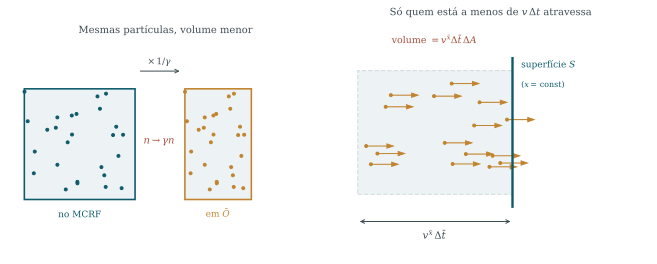
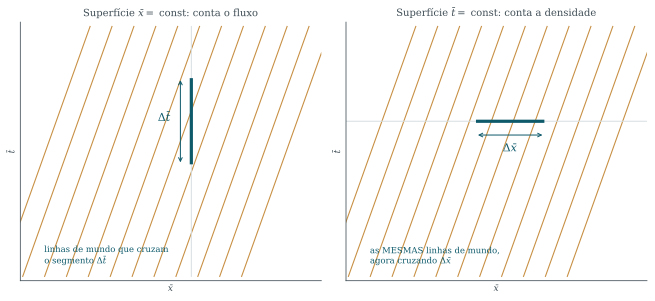
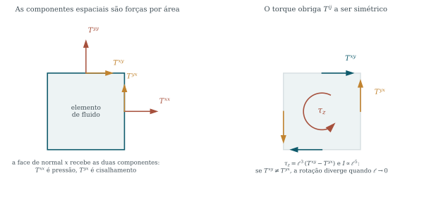

Relatividade Geral · UDESC/CCT · Capítulo 4
Fluidos
relativísticos
Contar partículas até chegar ao objeto que é a fonte da gravidade — e descobrir, no caminho, que densidade e fluxo são a mesma coisa.
Aulas 16 a 20 · use → e ← para navegar, F para tela cheia
Roteiro
Um degrau de cada vez
| § | Assunto |
|---|---|
| 4.1–4.3 | Fluido, poeira, e o vetor N^\mu=nU^\mu |
| 4.4–4.5 | Densidade é fluxo; a 1-forma da superfície |
| 4.6–4.8 | Conservação; T^{\alpha\beta}; simetria |
| 4.9–4.12 | Fluidos gerais, conservação, fluido perfeito, Euler |
| 4.13–4.15 | Equação de estado, importância, Gauss |
Este é o capítulo mais abstrato da primeira metade. Até aqui todo objeto novo tinha análogo newtoniano imediato: quadrivelocidade é velocidade, quadrimomento é momento. O tensor energia-momento não tem — ele reúne num objeto só coisas que Newton trata como não relacionadas.
A estratégia: começar contando partículas, que é concreto; descobrir que densidade e fluxo são o mesmo objeto visto de ângulos diferentes; e só então repetir o argumento trocando “número de partículas” por “energia e momento”.
Seção 4.1
O que é um fluido
Um contínuo é uma coleção tão numerosa que não faz sentido acompanhar cada partícula. Ficamos com médias. Mas médias sobre quantas?
A coleção precisa ser grande o bastante para que a partícula individual não importe, e pequena o bastante para que dentro dela tudo seja homogêneo. Uma coleção assim é um elemento de fluido.
| Meio | n (m^{-3}) | Há janela? |
|---|---|---|
| ar ao nível do mar | 2{,}5\times10^{25} | enorme — um cubo de 1 μm tem 2{,}5\times10^{7} moléculas |
| estrela de nêutrons | 10^{44} | de sobra — 1 μm tem 10^{26}, e a estrela tem 10 km |
| gás intergaláctico | 1 | por pouco — o elemento precisa ter anos-luz de lado |
Onde a janela não existe — um gás muito rarefeito num aparato de laboratório — a descrição de fluido não se aplica, e é preciso voltar à cinética.
Seção 4.1
O MCRF, e o que separa fluido de sólido
Cada elemento carrega um referencial: o MCRF, o inercial que naquele instante o acompanha. Toda grandeza escalar do fluido é definida nele — é isso que a torna escalar. Não é “a densidade medida por alguém”, é “a densidade medida por quem acompanha o elemento”.
Dois elementos vizinhos se empurram através da interface comum. A força pode ter componente perpendicular — a pressão — e componente paralela, que impede um de deslizar sobre o outro. É a segunda que dá rigidez.
Um fluido é um contínuo em que as forças de deslizamento são fracas; um fluido perfeito, aquele em que são exatamente nulas.
A divisão não é nítida, e não precisa ser: sob pressão suficiente quase todo sólido escoa — o manto terrestre é rocha e se comporta como fluido em escalas de milhões de anos. O que a definição faz não é classificar substâncias, é isolar a única propriedade que vai entrar na física: se há ou não força paralela à interface. Guarde a pergunta; ela reaparece como a condição que anula as componentes fora da diagonal de T^{\mu\nu}.
Seção 4.2
A densidade depende de quem mede

Poeira: partículas todas em repouso em algum referencial. Sem pressão, sem movimento térmico, sem interação. Pouco realista e didaticamente perfeito.
\bar n=\gamma\,n=\frac{n}{\sqrt{1-v^2}}
O número é o mesmo; o volume não. A contração encolhe a dimensão paralela ao movimento por 1/\gamma e deixa as transversas intactas.
(\text{fluxo})^{\bar x}=\gamma\,n\,v^{\bar x}
Só v^{\bar x} entra: deslocamento paralelo à superfície não faz ninguém atravessá-la.
Seção 4.3
O vetor fluxo de número
Ponha as duas lado a lado:
\bar n=\gamma n,\qquad (\text{fluxo})^{\bar i}=\gamma n v^{\bar i}
É exatamente o padrão \gamma(1,\bm v) da quadrivelocidade. Então:
N^\mu=n\,U^\mu, \qquad N^0=\gamma n\ \text{(densidade)}, \qquad N^i=\gamma n v^i\ \text{(fluxo)}
Densidade e fluxo não são duas grandezas. São a componente temporal e as componentes espaciais de um quadrivetor. A física pré-relativística tratava o fluxo como vetor tridimensional dependente do referencial e a densidade como escalar à parte; a relatividade os funde — como fundiu energia e momento em p^\mu.
E a norma devolve a densidade própria: N^\mu N_\mu=-n^2, logo n=\sqrt{-N^\mu N_\mu} é um escalar — do mesmo modo que a massa de repouso é escalar embora a energia dependa do observador.
Seção 4.4 · a ideia que organiza o capítulo
Densidade é um fluxo temporal

Desenhe as linhas de mundo. O fluxo através de \bar x= const é o número que cruza aquela superfície, por unidade de tempo e de área.
Agora repare: nada obriga esse volume tridimensional a conter a direção temporal. Tome a fatia \bar t= const e conte as linhas que a cruzam. Mas cruzar uma fatia de tempo constante é simplesmente estar lá naquele instante — e esse número é a densidade.
Uma única operação — contar linhas de mundo que atravessam uma hipersuperfície — produz as duas grandezas, dependendo apenas de qual hipersuperfície se escolhe.
Apêndice interativo · Seção 4.4
Ponha partículas, e olhe as linhas de mundo
Clique no quadro da esquerda para criar partículas; clique em cima de uma para removê-la. Em repouso, as linhas de mundo sobem retas — cada partícula apenas persiste, e é só isso que a linha diz.
v = 0,00 · \gamma = 1,000
6 partículas em \bar V = 1,00 → \bar n = 6,00
Duas coisas acontecem juntas: as linhas se inclinam e a caixa encolhe em x. Mesmo número de partículas, volume menor — que é \bar n=\gamma n desenhado.
O controle não acelera as partículas: ele troca de observador — acelerar um conjunto é ambíguo, porque o espaçamento depende de como se acelera, ao passo que olhar a mesma poeira de outro referencial é limpo, e é o que a Seção 4.2 faz. O painel direito suprime y, como a Figura 4.4 do Schutz. E nenhuma linha de mundo chega a se deitar tanto quanto as tracejadas: elas são a luz, a 45°.
Seção 4.5
A superfície é uma 1-forma
Falta dizer, sem coordenadas, o que é “a superfície” atravessada. Uma superfície é \varphi= const; o gradiente \dd\varphi é uma 1-forma, e as direções tangentes são exatamente as \vec V com \dd\varphi(\vec V)=0. Normalizando:
\tilde n=\frac{\dd\varphi}{|\dd\varphi|} \qquad\Longrightarrow\qquad \text{fluxo}=\tilde n(\vec N)=n_\mu N^\mu
Superfície \bar x= const: \tilde n=(0,1,0,0) e \tilde n(\vec N)=N^{\bar x}=\gamma n v^{\bar x} — o fluxo.
Superfície \bar t= const: \tilde n=(1,0,0,0) e \tilde n(\vec N)=N^{\bar t}=\gamma n — a densidade.
Uma única expressão, n_\mu N^\mu, produz as duas. É o slide anterior escrito em símbolos.
Aviso de notação: o \tilde n da 1-forma normal e o n da densidade própria não têm nada em comum — é acidente histórico infeliz que usem a mesma letra. O til é obrigatório.
Seção 4.6
Conservação do número de partículas
\partial_\mu N^\mu=0
Escrevendo as componentes, \partial_t(\gamma n)+\partial_i(\gamma n v^i)=0, que no limite v\ll1 vira \partial_t n+\nabla\!\cdot(n\bm v)=0 — a continuidade newtoniana.
Uma lei de conservação, na linguagem tensorial, é sempre a mesma frase: a divergência de um fluxo se anula. O conteúdo físico está em qual grandeza é transportada. Aqui é o número de partículas; adiante será energia e momento, e a estrutura não muda.
A versão relativística não é uma equação nova. É a mesma, escrita de modo que todo observador escreva a mesma coisa.
Seção 4.7
O tensor energia-momento
T^{\alpha\beta} é o fluxo da componente \alpha do quadrimomento através de uma superfície de x^\beta constante.
Leia duas vezes. O primeiro índice diz qual componente do momento é transportada; o segundo, através de qual superfície. É a estrutura de N^\mu com um índice a mais.
T^{\alpha\beta}=m\,U^\alpha N^\beta=\rho\,U^\alpha U^\beta, \qquad \rho\equiv mn
Para poeira, cada partícula carrega p^\alpha=mU^\alpha e o fluxo de partículas é N^\beta=nU^\beta — o fluxo de momento é o produto. No MCRF sobra só T^{00}=\rho: nenhuma energia flui, nenhum momento existe, nenhuma tensão atua. Poeira em repouso é o objeto mais simples que gravita.
Seção 4.7
Os quatro blocos
| nome | o que é | |
|---|---|---|
| T^{00} | densidade de energia | energia por unidade de volume |
| T^{0i} | fluxo de energia | no MCRF só pode vir de condução de calor |
| T^{i0} | densidade de momento | no MCRF as partículas não têm momento líquido, mas energia em trânsito carrega momento |
| T^{ij} | tensões | fluxo da componente i do momento através da superfície j: força por unidade de área |
T^{0i} e T^{i0} parecem a mesma coisa e não são: um é fluxo de energia, o outro é densidade de momento. Que acabem iguais é um resultado a demonstrar, não uma definição — e em teorias com spin o tensor pode não ser simétrico.
Seção 4.8
Por que T^{ij}=T^{ji}

Tome um cubo de lado \ell e calcule o torque em torno de z:
\tau_z=\ell^3\bigl(T^{xy}-T^{yx}\bigr)
O momento de inércia escala como I\propto\rho\,\ell^5, então
\dot\omega=\frac{\tau_z}{I}\propto\frac{1}{\ell^2} \xrightarrow[\ell\to0]{}\infty
Um elemento arbitrariamente pequeno giraria com aceleração angular arbitrariamente grande. Absurdo — logo T^{xy}=T^{yx}. E como foi demonstrado num referencial e T é tensor, vale em todos.
Seção 4.9
Fluidos gerais: energia interna
\rho=\rho_0(1+\Pi),\qquad \rho_0=mn
Poeira só tem energia de repouso. Um fluido de verdade tem também agitação térmica, energia de ligação, excitação — e \Pi é essa energia interna por unidade de massa de repouso. A densidade total \rho é o que gravita.
n\,\Delta q=\Delta\rho-\frac{\rho+p}{n}\,\Delta n
É a primeira lei, \Delta E=\Delta Q-p\,\Delta V, com V=N/n e E=\rho V. O que se mantém fixo é o número, não o volume: daí \Delta V=-N\Delta n/n^2.
Repare na combinação \rho+p. Não é acidente de álgebra: é a mesma que aparecerá no tensor do fluido perfeito e nas equações de Euler, fazendo o papel de densidade de inércia. Em relatividade a pressão contribui para a inércia — e, por consequência, para a gravidade.
Seção 4.10
Conservação de energia e momento
Um cubo de lado \ell. A energia dentro é T^{00}\ell^3; ela entra e sai pelas seis faces. Pela face em x=0 entra à taxa \ell^2T^{0x}(0), e pela face em x=\ell sai — com o sinal trocado.
\frac{\partial}{\partial t}\bigl(T^{00}\ell^3\bigr) =\ell^2\bigl[T^{0x}(0)-T^{0x}(\ell)+\cdots\bigr]
Divida por \ell^3, faça \ell\to0, e cada colchete vira menos uma derivada:
\boxed{\ \partial_\beta T^{\alpha\beta}=0\ }
Repare no que a conta não usou: nada sobre fluido perfeito, nada sobre equação de estado, nem que exista um fluido. Vale para qualquer T^{\alpha\beta} que mereça o nome — o do campo eletromagnético inclusive. E são quatro equações: \alpha=0 é a energia, \alpha=i é cada componente do momento.
Seção 4.11
O fluido perfeito
| Hipótese | Consequência no MCRF |
|---|---|
| sem condução de calor | T^{0i}=T^{i0}=0 |
| sem forças paralelas | T^{ij}=0 para i\ne j |
| isotropia | T^{ij}=p\,\delta^{ij} |
T^{\alpha\beta}\ \hat=\ \mathrm{diag}(\rho,p,p,p)
Falta escrever sem referencial. Procuramos a combinação de U^\alpha U^\beta e \eta^{\alpha\beta} que reproduza aquela matriz onde U^\alpha=(1,0,0,0):
\boxed{\ T^{\alpha\beta}=(\rho+p)U^\alpha U^\beta +p\,\eta^{\alpha\beta}\ }
A verificação é de uma linha: a componente 00 dá (\rho+p)-p=\rho, e cada ii dá 0+p=p. Dois tensores que coincidem num referencial coincidem em todos.
Em relatividade geral basta trocar \eta por g. É o padrão que se repete no curso inteiro: escreva a física no referencial local onde ela é simples, ponha em forma tensorial, e a versão curva sai trocando a métrica.
Seção 4.12
As equações do fluido perfeito
Substituindo em \partial_\alpha T^{\alpha\beta}=0 e projetando de duas maneiras.
Ao longo de \vec U (contraia com U_\beta):
U^\alpha\partial_\alpha\rho +(\rho+p)\,\partial_\alpha U^\alpha=0
Variação de \rho seguindo o elemento, mais o trabalho de expansão. É a primeira lei em forma de campo.
Perpendicular a \vec U:
(\rho+p)\,U^\alpha\partial_\alpha U^\beta =-h^{\beta\nu}\partial_\nu p
com h^{\beta\nu}=\eta^{\beta\nu}+U^\beta U^\nu. É a Euler relativística.
Compare com \rho(\partial_t\bm v+\bm v\cdot\nabla\bm v) =-\nabla p. A estrutura é idêntica, com uma diferença: onde Newton tem \rho, a relatividade tem \rho+p. A pressão contribui para a inércia. Um gás muito quente é mais difícil de acelerar que um frio de mesma densidade de massa.
Seção 4.13
Equações de estado
As equações não fecham: há mais incógnitas (\rho, p, n, U^\mu) que equações. Falta a relação constitutiva p=w\rho.
| w | componente | justificativa |
|---|---|---|
| 0 | poeira fria | sem movimento térmico apreciável: p\ll\rho |
| 1/3 | radiação | T^\mu{}_\mu=-\rho+3p, e o tensor eletromagnético tem traço nulo |
| -1 | constante cosmológica | pressão negativa; produz expansão acelerada |
A radiação sai sem estatística nenhuma: nenhuma hipótese sobre distribuição de velocidades, nenhuma integral sobre modos. A equação de estado vem de uma propriedade algébrica do traço.
E a causalidade limita o resto: c_s^2=\dd p/\dd\rho, e exigir c_s\le1 dá w\le1.
Seção 4.14
Por que isso importa
G_{\mu\nu}=8\pi G\,T_{\mu\nu}
A fonte não é a massa. É o tensor inteiro. A massa newtoniana é apenas T^{00} no limite de campo fraco e velocidades pequenas.
Para a Terra em órbita, v/c\approx10^{-4}: o bloco de densidade de momento é dez mil vezes menor que o de energia, e o de tensões, cem milhões. Sobra T^{00} sozinho.
Pressão gravita. Numa estrela de nêutrons, a pressão que sustenta a estrela também contribui para o peso a sustentar — e é dessa realimentação que nasce uma massa máxima, coisa que Newton não prevê.
A conservação não é opcional. A identidade geométrica \nabla_\mu G^{\mu\nu}=0 força \nabla_\mu T^{\mu\nu}=0. O movimento do fluido está contido nas equações de campo.
Seção 4.15
Lei de Gauss em quatro dimensões
\int_\Omega \partial_\mu N^\mu\,\dd^4x =\oint_{\partial\Omega} N^\mu n_\mu\,\dd^3S
Tome para \Omega um cilindro no espaço-tempo: uma região espacial V fixa, entre t_1 e t_2. A fronteira tem três pedaços — as duas tampas e a lateral. Pela Seção 4.4, cada tampa dá o número de partículas dentro naquele instante, e a lateral dá o número que atravessou a fronteira espacial.
N(t_2)-N(t_1)=-\,(\text{número que saiu por }\partial V)
Repare no que a linguagem quadridimensional fez: “o que havia antes”, “o que há depois” e “o que atravessou a fronteira” deixaram de ser três coisas e viraram três pedaços da mesma integral sobre a fronteira de uma região do espaço-tempo. A mesma construção, aplicada a T^{\mu\nu}, vai exigir que o lado geométrico das equações de campo tenha divergência nula.